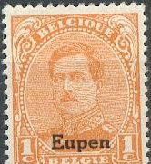
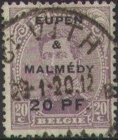
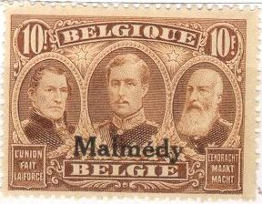
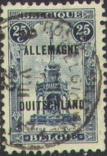
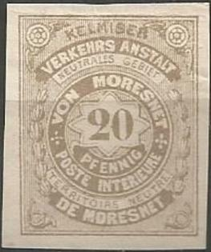
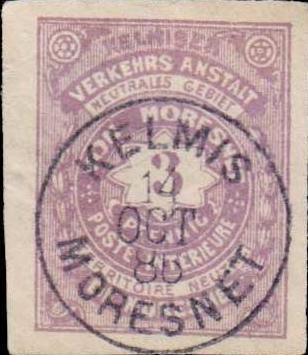
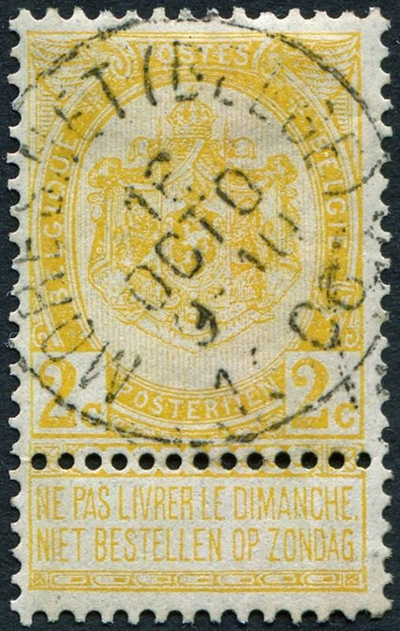

Note: on my website many of the
pictures can not be seen! They are of course present in the
catalogue;
contact me if you want to purchase it.
German territory untill 1918, then ceded to Belgium.
On King Albert issue

1 c orange 2 c brown 3 c grey 5 c green 10 c red 15 c violet 20 c lilac 25 c blue On pictorial issue
25 c blue
35 c brown and black
40 c green and black
50 c red and black
65 c red and black ("EUPEN" in larger size)
1 F violet
2 F grey
5 F blue
10 F brown
On postage due stamps
5 c green 10 c red 20 c green 30 c blue 50 c grey
Value of the stamps |
|||
vc = very common c = common * = not so common ** = uncommon |
*** = very uncommon R = rare RR = very rare RRR = extremely rare |
||
| Value | Unused | Used | Remarks |
King Albert |
|||
| 1 c | c | c | |
| 2 c | c | c | |
| 3 c | * | * | |
| 5 c | * | * | |
| 10 c | * | * | |
| 15 c | * | * | |
| 20 c | * | * | |
| 25 c | * | * | |
Pictorial issue |
|||
| 25 c | * | * | |
| 35 c | ** | ** | |
| 40 c | ** | ** | |
| 50 c | *** | *** | |
| 65 c | ** | ** | |
| 1 F | *** | *** | |
| 2 F | R | R | |
| 5 F | *** | *** | |
| 10 F | RR | RR | |
| Postage Due | |||
| 5 c | * | * | |
| 10 c | ** | ** | |
| 20 c | ** | ** | |
| 30 c | ** | ** | |
| 50 c | *** | *** | |

Certified genuine stamp with "NEU-MORESNET" cancel.

With Herbesthal cancel.
First image forged 'Eupen' overprint (too fat and too wide),
second image genuine 'Eupen' overprint, third image forged
'Malmedy' overprint (too wide, no accent on 'e') and fourth image
genuine 'Malmedy' overprint.

5 pf on 5 c green 10 pf on 10 c red 15 pf on 15 c violet 20 pf on 20 c lilac 30 pf on 25 c blue 75 pf (red) on 50 c red and black 1M25 (red) on 1 F violet
Value of the stamps |
|||
vc = very common c = common * = not so common ** = uncommon |
*** = very uncommon R = rare RR = very rare RRR = extremely rare |
||
| Value | Unused | Used | Remarks |
King Albert |
|||
| 5 p on 5 c | c | c | |
| 10 p on 10 c | c | c | |
| 15 p on 15 c | * | * | |
| 20 p on 20 c | * | * | |
| 30 p on 25 c | * | * | |
| 75 p on 50 c | *** | *** | |
| 1M25 on 1 F | *** | *** | |

A label made in Germany to commemorate the loss of the territory
Eupen-Malmedy. Similar labels exist for other lost territories
and lost colonies.
German territory untill 1918, then ceded to Belgium.
On King Albert issue

1 c orange 2 c brown 3 c grey 5 c green 10 c red 15 c violet 20 c lilac 25 c blue On pictorial issue

25 c blue
35 c brown and black
40 c green and black
50 c red and black
65 c red and black ("MALMEDY" in larger size)
1 F violet
2 F grey
5 F blue
10 F brown
On postage due stamps
5 c green 10 c red 20 c green 30 c blue 50 c grey
Value of the stamps |
|||
vc = very common c = common * = not so common ** = uncommon |
*** = very uncommon R = rare RR = very rare RRR = extremely rare |
||
| Value | Unused | Used | Remarks |
King Albert |
|||
| 1 c | c | c | |
| 2 c | c | c | |
| 3 c | * | * | |
| 5 c | * | * | |
| 10 c | * | * | |
| 15 c | * | * | |
| 20 c | * | * | |
| 25 c | * | * | |
Pictorial issue |
|||
| 25 c | * | * | |
| 35 c | ** | ** | |
| 40 c | ** | ** | |
| 50 c | *** | *** | |
| 65 c | ** | ** | |
| 1 F | *** | *** | |
| 2 F | R | R | |
| 5 F | *** | *** | |
| 10 F | RR | RR | |
| Postage Due | |||
| 5 c | * | * | |
| 10 c | ** | ** | |
| 20 c | ** | ** | |
| 30 c | *** | *** | |
| 50 c | ** | ** | |
With "LIGNEUVILLE" cancel (nearby Malmedy)
First image forged "Eupen" overprint (too fat and too
wide), second image genuine "Eupen" overprint, third
image forged "Malmedy" overprint (too wide, no accent
on "e") and fourth image genuine "Malmedy"
overprint.

This might be a forged "Malmedy" overprint, the accent
on the "e" is too steep in my opinion.
On King Albert issue

1 c orange 2 c brown 3 c grey 5 c green 10 c red 15 c violet 20 c lilac 25 c blue On pictorial issue

25 c blue 35 c brown and black 40 c green and black 50 c red and black 65 c red and black 1 F violet 2 F grey 5 F blue 10 F brown
Value of the stamps |
|||
vc = very common c = common * = not so common ** = uncommon |
*** = very uncommon R = rare RR = very rare RRR = extremely rare |
||
| Value | Unused | Used | Remarks |
| 1 c | vc | c | |
| 2 c | vc | c | |
| 3 c | c | c | |
| 5 c | c | c | |
| 10 c | c | c | |
| 15 c | c | c | |
| 20 c | c | c | |
| 25 c | * | * | (King) |
| 25 c | * | * | (Pictorial issue) |
| 35 c | * | * | |
| 40 c | * | * | |
| 50 c | ** | ** | |
| 65 c | * | * | |
| 1 F | ** | ** | |
| 2 F | *** | *** | |
| 5 F | *** | *** | |
| 10 F | *** | *** | |

In the first few days, the old German cancelling devices were
still used.

Deceptive forged "ALLEMAGNE DUITSCHLAND" overprint on
genuine stamp.
This small territory between Germany, Belgium and the Netherlands did officially belong to none of these countries. Due to a small error in the treaty of Vienna in 1815 (a zinc mine in the territory was disputed among all neighbouring countries and the territory was left 'neutral'). In 1886 8 stamps were issued by Dr.Molly (on 1st October?). They were forbidden only a few days later (on 19th October 1886) and overprinted with the following text: "AUSSER COURS GESETZT", (no longer valid) or also "Ausser Cours". In 1918 it definitively joined Belgium after having been occupied by Germany during World War I. The text on the stamps reads "KELMISER VERKEHRS ANSTALT NEUTRALES GEBIET VON MORESNET POSTE INTERIEURE TERRITOIRE NEUTRE DE MORESNET".

Genuine?
Note that the top of the '5' of the 50 p is different from the
above pair of stamps. I've been told that this 50 p stamp is a
forgery. The others might also be forgeries. Note that the '20'
in the 20 p is also differerent from the above shown stamp.

Cancelled to order "KELMIS ... OCT 86 MORESNET"; I've
seen the dates 7 to 19 October; also "OCT 85"(?). Next
to it some stamps overprinted "AUSSER KURS GESETZT" in
a recangle with cut off corners.
Overprinted 'Ausser Cours.' in a straight line
Forgeries exist of these stamps, I don't know if the above shown stamps are genuine or not. If you have more information, please contact me!
Although these stamps exist with cancels, no genuinely used letters are known.
A bogus issue made by stamp dealer Moens;
10 p black (imperforate or perforated)

Some perforated stamps in black on different background colors.
A short history behind the appearance of this stamps can be found at http://web.archive.org/web/20050323024956/student.ulb.ac.be/~charveng/moens/biblio2.htm. Moens, apparently unhappy with the fact that Pierre Mahé of the French journal Timbrohile copied Moens' work in his journal, without giving any source where he found it, published the following 'letter' from Moresnet:
Moresnet, le 1er avril 1867
Cher Monsieur Moens,
Je puis donc à mon tour vous apporter mon contingent de nouvelles et apprendre à vos lecteurs qu’il ya [sic] de par le monde une commune libre de Moresnet, qui vient de révéler son existence par la création de modestes timbres-poste. Ce mode d’affranchissement a été adopté sur la proposition de M. Decrackt, le directeur actuel des postes, et la mise en usage fixée au 15 courant. Il y aura quatre valeurs différentes d’un même type : deux, unicolores, pour la correspondance pour l’Allemagne ; deux, bicolores, pour celle des autres pays. Cette différence d’impression pour bien établir l’usage de ces timbres.
Je joins à cette lettre, une épreuve du 10 centimes imprimée en noir sur carton glacé ; je possède pareillement les autres valeurs. Le dessin représente l’écu de la commune parti de Belgique et de Prusse, sommé du bonnet phrygien de la liberté, posé de côté. Légende : Commune libre de Moresnet ; dans les angles, la valeur en chiffres. […]
Ils sont gravés par MM. De Visch et Lirva, de votre ville, qui se sont chargés en même temps de l’impression, moyennant le prix modique de 75 centimes les mille timbres gommés et piqués. Nous n’avons qu’un seul reproche à formuler contre ces timbres, c’est l’absence de l’énonciation de la valeur. […]
J.S. Néom
This letter describes how a new set of stamps was to be issued in Moresnet. The name 'J.S.Neom' is 'Moens' written backwards. Furthermore the printer 'De Visch et Lirva' can be translated as 'Poisson d'avril' (Visch = fish = Poisson in French; 'Lirva' is 'Avril' spelled backwards). A 'Poisson d'Avril' is the French word for April fool..... The 'joke' worked and this 'newsfact' was straight away taken over by Pierre Mahe in his journal.

"MORESNET (BELGE)" cancel of 1906.
Literature:
http://www.moresnet.nl/english/postverkeer_en.htm (with a list of street names and cancels of Moresnet)
{kind=link}
{kind=link}
{kind=link}